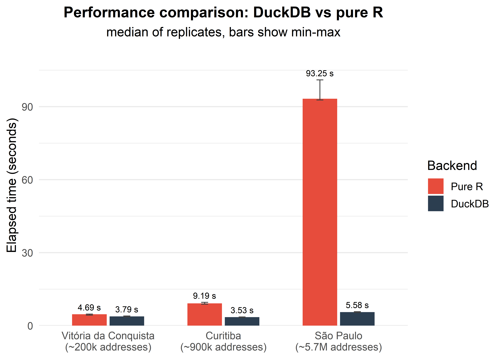
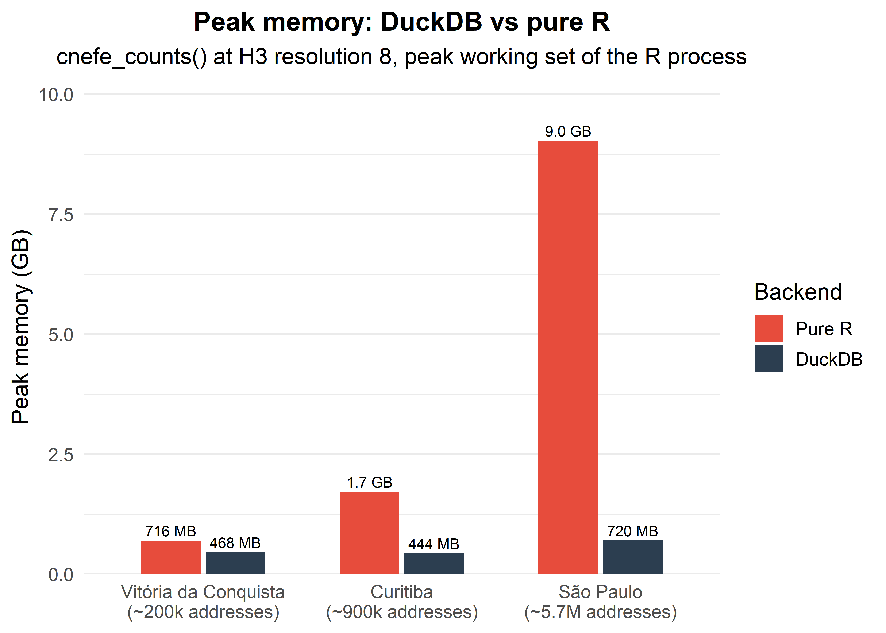
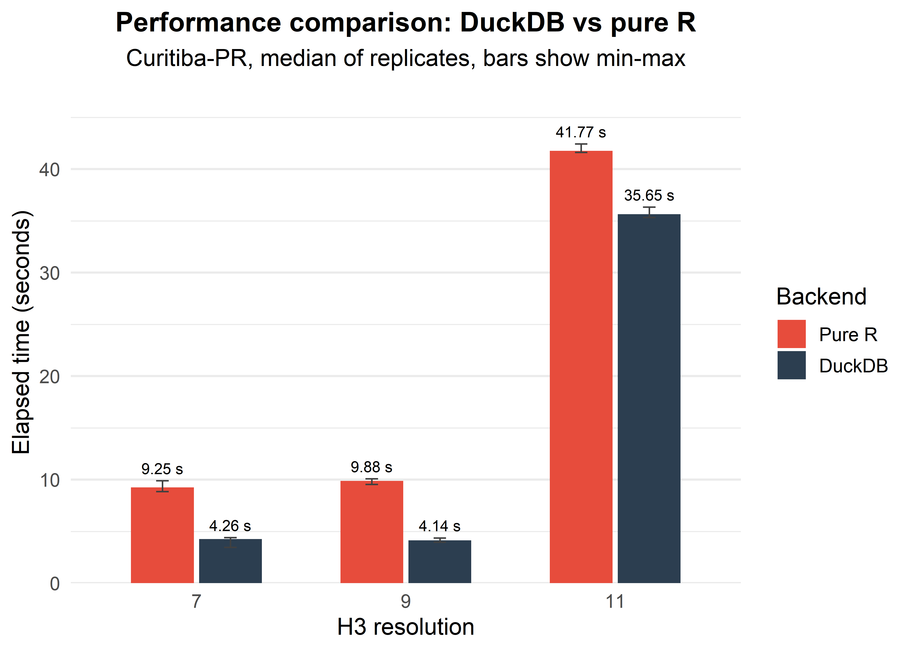
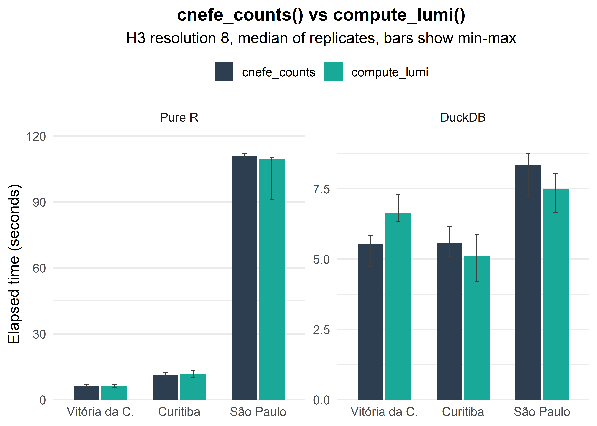

Performance benchmark: DuckDB vs pure-R backends
Source:vignettes/articles/bench_duckdb.Rmd
bench_duckdb.RmdIntroduction
Under the hood, {cnefetools} uses DuckDB as its default backend for the
heavy work. A pure-R fallback (backend = "r") is available
for environments where DuckDB extensions cannot be installed, using h3jsr and sf for the same
operations.
Two DuckDB extensions do the work:
-
h3:
assigns geographic coordinates to H3 hexagonal grid cells entirely
inside DuckDB. This is what
cnefe_counts()andcompute_lumi()rely on. -
spatial:
performs point-in-polygon joins in SQL. This is what the
tracts_to_*()functions and the user-polygon mode rely on. It is not used by the H3 mode benchmarked in the first two sections below.
The cached file itself is a gzipped CSV, which DuckDB decompresses natively, so no extension is involved in reading it.
This article reports four things:
- how
cnefe_counts()scales with municipality size, in both elapsed time and peak memory, comparing backends; - how it scales with H3 resolution, comparing backends;
- the elapsed time and peak memory of every heavy function in the
package, not just
cnefe_counts(); - what happens when DuckDB is held to a small resource budget, standing in for a more modest machine.
Memory turns out to separate the backends far more sharply than time does, and in the direction opposite to the one most people expect, so it is worth not skipping that section.
How these numbers were produced
Benchmarking on a laptop is harder than it looks, and it is worth being explicit about the method, because a naive measurement here is actively misleading.
Running the same call on the same warm input repeatedly, we measured elapsed times from 1.63 s to 3.77 s within a single session, with the slow runs at the end rather than the beginning. A fresh session minutes later ran uniformly slower than the first session’s early runs. That pattern is CPU thermal and frequency drift: it is not cold page cache, which would make the first runs slow, and it is not thread scheduling, since pinning CPU affinity barely changed anything.
The consequence matters. If you time every DuckDB case and then every pure-R case, that drift lands entirely on one backend and is indistinguishable from the effect you are trying to measure. So the measurements here:
- discard a warm-up run per configuration, so the OS page cache is hot and the one-off extension load is already paid;
- visit every configuration once per pass, round-robin, repeated 3 to 5 times, so drift becomes noise spread across all configurations rather than bias loaded onto one;
- report the median with the observed min-max range, not a single run;
- run each replicate in a fresh R subprocess;
- record how much CPU the rest of the machine used during each replicate, so contention is visible in the data rather than assumed away.
Peak memory is the operating system’s peak working set for the whole
process, via ps::ps_memory_info(). This matters: R-level
allocation tracking, such as bench::mark()’s
mem_alloc, counts only the R heap, and DuckDB allocates in
C++ outside it. Reporting R-level allocation for a DuckDB workload would
understate it substantially.
The raw per-replicate measurements, including the machine-load
columns, are in data-raw/bench_r2_8.csv in the package
repository, and the harness that produced them is
data-raw/bench_r2_8.R.
# Summarising, labelling and plotting live in one place, shared with the
# manuscript's paper/figures/benchmark.R, so the two cannot disagree on a
# speedup, a rounding rule or a label.
source("../../data-raw/bench_r2_8_plots.R")
bench <- bench_load()
bench_med <- bench_summarise(bench)The machine: 14-core, 20-thread Intel Core i9-13900H (2.60 GHz), 32 GB RAM, Windows 11.
data.frame(
component = c("R", "duckdb", "cnefetools"),
version = c(
paste0(R.version$major, ".", R.version$minor),
as.character(packageVersion("duckdb")),
as.character(packageVersion("cnefetools"))
)
) |>
kbl() |>
kable_styling(full_width = FALSE)| component | version |
|---|---|
| R | 4.6.0 |
| duckdb | 1.5.2 |
| cnefetools | 0.3.0.9000 |
Comparing cities of different sizes
cnefe_counts() aggregating CNEFE address points to H3
hexagons at resolution 8, across three municipalities of increasing
size.
This is the code the harness runs. It is shown rather than executed, because this article plots from the committed measurements so that it renders without re-downloading hundreds of megabytes, and so that the numbers here and in the package’s accompanying paper cannot drift apart.
cods <- c(
"Vitoria da Conquista-BA" = 2933307,
"Curitiba-PR" = 4106902,
"Sao Paulo-SP" = 3550308
)
# One replicate. The real harness wraps this in a fresh subprocess, repeats it
# round-robin across all configurations, and records peak memory.
for (backend in c("duckdb", "r")) {
for (cod in cods) {
system.time(
cnefe_counts(
code_muni = cod,
h3_resolution = 8,
backend = backend,
verbose = FALSE
)
)
}
}
cities <- bench_cities(bench_med)
bench_plot_time(
cities, city_lbl,
subtitle = "median of replicates, bars show min-max"
)
Note: For smaller municipalities, the DuckDB backend may offer little or no speedup over pure R, and can even be slightly slower. DuckDB pays a fixed cost to initialise the connection, load the H3 extension and materialise data into its in-memory storage before any computation begins. When the dataset is small, that setup cost outweighs the gains from its query engine.
Memory
Elapsed time is the visible cost. Memory is the one that decides whether the call finishes at all, and the gap between the backends is much wider here than in the timings.
bench_plot_memory(
cities, city_lbl,
subtitle = "cnefe_counts() at H3 resolution 8, peak working set of the R process"
)
The pure-R backend holds the filtered address table in R memory, so its footprint scales with the number of addresses. DuckDB streams the CSV and aggregates as it goes, so it never materialises the full table and its footprint stays roughly flat. On the largest municipality this is the difference between a workstation-sized requirement and something that fits comfortably on any current laptop.
This has a practical consequence that is easy to get backwards. The pure-R backend exists for environments where DuckDB extensions cannot be installed. It is not the lightweight option, and it is the wrong choice on a machine that is short of RAM.
Contrasting three spatial resolutions
The same function on a fixed municipality, Curitiba-PR, across H3 resolutions 7, 9 and 11.
for (backend in c("duckdb", "r")) {
for (res in c(7, 9, 11)) {
system.time(
cnefe_counts(
code_muni = 4106902,
h3_resolution = res,
backend = backend,
verbose = FALSE
)
)
}
}
h3res <- bench_med |>
filter(block == "h3res") |>
mutate(
res_lbl = factor(h3_res, levels = sort(unique(h3_res))),
backend_lbl = bench_backend(backend)
)
bench_plot_time(
h3res, res_lbl,
xlab = "H3 resolution",
subtitle = "Curitiba-PR, median of replicates, bars show min-max"
)
Note: At finer H3 resolutions the hexagons are much smaller, so the H3 point-to-cell indexing, which both backends ultimately delegate to the same underlying H3 C library, dominates the total runtime. Because DuckDB still pays its fixed startup cost while the actual computation gets lighter per cell, its relative advantage shrinks as resolution rises.
The other heavy functions
cnefe_counts() is not the only expensive function in the
package, and the three others do not share its cost profile.
compute_lumi() is deliberately close to it. Both read
the same gzipped CSV through the same DuckDB scan, assign H3 cells with
the same h3_latlng_to_cell() call, and aggregate with the
same GROUP BY. compute_lumi() then aggregates
to two columns instead of eight, so it actually skips a pivot, and adds
the land-use mix arithmetic. That arithmetic runs once per
hexagon, not once per address, which
is three to four orders of magnitude fewer operations. The expectation
is that the two track each other closely, and the measurement below is
there to check that rather than assert it.
The tracts_to_*() functions are a genuinely different
workload. They add a point-in-polygon overlay of the full CNEFE point
set against census tract polygons, plus a Parquet download of the tract
attributes. They are DuckDB-only and expose no backend
argument: running that overlay in R would give users a path that does
not finish rather than a slower one.
lumi_cmp <- bench_med |>
filter(block %in% c("cities", "lumi")) |>
mutate(
city_lbl = bench_city(muni, short = TRUE),
backend_lbl = bench_backend(backend)
)
ggplot(lumi_cmp, aes(x = city_lbl, y = seconds, fill = fn)) +
geom_col(width = 0.65, position = position_dodge(width = 0.7)) +
geom_errorbar(
aes(ymin = lo, ymax = hi), width = 0.12,
position = position_dodge(width = 0.7), linewidth = 0.4, colour = "grey25"
) +
facet_wrap(~backend_lbl, scales = "free_y") +
scale_fill_manual(values = c("cnefe_counts" = "#2C3E50",
"compute_lumi" = "#18A999")) +
scale_y_continuous(expand = expansion(mult = c(0, 0.1))) +
labs(
title = "cnefe_counts() vs compute_lumi()",
subtitle = "H3 resolution 8, median of replicates, bars show min-max",
x = NULL, y = "Elapsed time (seconds)", fill = NULL
) +
bench_theme() +
theme(legend.position = "top")
Elapsed time and peak memory for every heavy function, with the DuckDB backend where there is a choice:
bench_med |>
filter(block %in% c("cities", "lumi", "tracts"), backend != "r" | is.na(backend)) |>
mutate(muni = bench_city(muni)) |>
arrange(muni, fn) |>
transmute(
Function = paste0(fn, "()"),
Municipality = muni,
Addresses = n_addresses,
`Median (s)` = round(seconds, 2),
`Range (s)` = sprintf("%.2f - %.2f", lo, hi),
`Peak memory (MB)` = round(peak_mb)
) |>
kbl() |>
kable_styling() |>
collapse_rows(columns = 2:3, valign = "top")| Function | Municipality | Addresses | Median (s) | Range (s) | Peak memory (MB) |
|---|---|---|---|---|---|
| cnefe_counts() | Vitória da Conquista-BA | ~200k | 5.55 | 4.73 - 5.83 | 464 |
| compute_lumi() | 6.64 | 6.34 - 7.28 | 391 | ||
| tracts_to_h3() | 11.45 | 10.45 - 13.05 | 687 | ||
| tracts_to_polygon() | 7.05 | 6.88 - 8.48 | 820 | ||
| cnefe_counts() | Curitiba-PR | ~900k | 5.56 | 5.08 - 6.16 | 442 |
| compute_lumi() | 5.09 | 4.22 - 5.89 | 357 | ||
| tracts_to_h3() | 8.56 | 7.65 - 10.08 | 626 | ||
| tracts_to_polygon() | 5.17 | 4.99 - 6.33 | 1139 | ||
| cnefe_counts() | São Paulo-SP | ~5.7M | 8.33 | 7.23 - 8.75 | 693 |
| compute_lumi() | 7.48 | 6.65 - 8.04 | 574 | ||
| tracts_to_h3() | 20.69 | 17.97 - 21.76 | 1946 | ||
| tracts_to_polygon() | 20.35 | 16.28 - 20.82 | 4418 |
Peak memory is the whole R process, not an increment, so it includes the roughly 60 MB a bare R session occupies before any of this runs. That is the number to compare against the RAM in a machine.
Running on a smaller machine
The figures above come from a well-equipped laptop. The question a reader actually has is whether the package runs on theirs.
Two things answer it. The first is the peak memory column above: it is measured, and it is the requirement.
The second is that DuckDB adapts. Left alone it sets
memory_limit to 80% of installed RAM, so it asks for less
on a smaller machine, and when a query exceeds that limit it spills to a
temporary directory rather than failing. A small machine is slower, not
blocked.
You can also hold it back explicitly, which is what the constrained measurements below do:
bench_med |>
filter(
muni == "Sao Paulo-SP",
fn %in% c("cnefe_counts", "tracts_to_h3"),
backend %in% "duckdb" | is.na(backend)
) |>
transmute(
Function = paste0(fn, "()"),
Profile = ifelse(constrained, "4 threads, 4 GB", "full machine"),
`Median (s)` = round(seconds, 2),
`Peak memory (MB)` = round(peak_mb)
) |>
arrange(Function, desc(Profile)) |>
kbl(caption = "Sao Paulo-SP, the largest municipality in the dataset") |>
kable_styling()| Function | Profile | Median (s) | Peak memory (MB) |
|---|---|---|---|
| cnefe_counts() | full machine | 8.33 | 693 |
| cnefe_counts() | 4 threads, 4 GB | 9.37 | 455 |
| tracts_to_h3() | full machine | 20.69 | 1946 |
| tracts_to_h3() | 4 threads, 4 GB | 27.85 | 1798 |
What this does and does not show. Constraining threads and DuckDB’s memory budget reproduces the resource envelope of a modest machine, not a modest machine. The storage, the RAM speed, the CPU generation and the operating system are all still the ones listed above. A genuinely older laptop would do worse than these figures, particularly on the initial read, which is I/O-bound. Treat this as evidence that the package works within a small budget, not as a prediction of runtime on specific hardware.
Conclusions
bench_med |>
filter(block == "cities") |>
mutate(muni = bench_city(muni)) |>
bench_speedup("muni") |>
left_join(
bench_med |>
filter(block == "cities") |>
mutate(muni = bench_city(muni)) |>
distinct(muni, n_addresses),
by = "muni"
) |>
arrange(muni) |>
transmute(Municipality = muni, Addresses = n_addresses,
`DuckDB speedup` = speedup) |>
kbl() |>
kable_styling(full_width = FALSE)| Municipality | Addresses | DuckDB speedup |
|---|---|---|
| Vitória da Conquista-BA | ~200k | 1.14 |
| Curitiba-PR | ~900k | 2.03 |
| São Paulo-SP | ~5.7M | 13.29 |
bench_med |>
filter(block == "h3res") |>
bench_speedup("h3_res") |>
mutate(
`Mean hexagon area (m2)` = c(5161293.36, 105332.51, 2149.64)[
match(h3_res, c(7, 9, 11))
]
) |>
arrange(h3_res) |>
transmute(`H3 resolution` = h3_res, `Mean hexagon area (m2)`,
`DuckDB speedup` = speedup) |>
kbl() |>
kable_styling(full_width = FALSE)| H3 resolution | Mean hexagon area (m2) | DuckDB speedup |
|---|---|---|
| 7 | 5161293.36 | 1.88 |
| 9 | 105332.51 | 2.02 |
| 11 | 2149.64 | 1.02 |
The DuckDB advantage in time is real but conditional. It grows with the number of address points, and it shrinks as H3 resolution rises to the point of disappearing: at resolution 11 the two backends are within a couple of percent of each other, because H3 indexing then dominates and both backends delegate it to the same underlying C library. On the smallest municipality the two are close enough that the choice does not matter, and in one configuration measured here pure R came out marginally ahead.
The DuckDB advantage in memory is unconditional, and it is the larger of the two. It does not shrink with resolution, and it widens with municipality size, because only one of the two backends materialises the address table in memory.
Recommendation: use the DuckDB backend, which is the
default. The pure-R backend exists for environments where DuckDB
extensions cannot be installed, and choosing it costs far more in memory
than it does in time. If you are on a memory-constrained machine, set
cnefetools.duckdb_config rather than switching backends:
the pure-R path is not the lighter one.